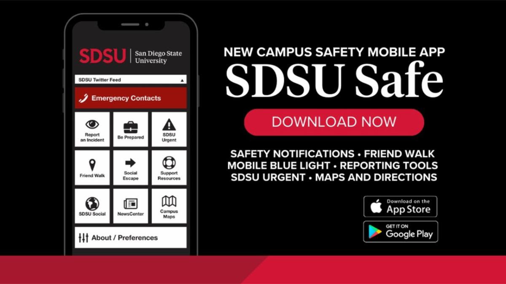
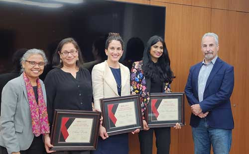

Welcome to the Student Academic Success Newsletter!
The Student Success team serves students from all majors and guides them towards academic success through campus resources and advising.
Our newsletter aims to highlight student voices, celebrate academic excellence, share events, promote resources, and inspire students to maximize their success at SDSU.
We hope you stay connected with us!
May Rafo Shamasha is a first-generation freshman at SDSU, majoring in business management and philosophy while minoring in leadership. Being the only one in her family of 7 to attend college, she is driven and grateful for this opportunity, considering none of her older siblings or her parents had the chance to do so. This deep sense of gratitude has instilled determination and purpose into May as she approaches life at SDSU. Originally from Iraq, she and her family moved to the United States when she was only 8 years old, and though she is now fluent in English, the language barrier initially led her to doubt her own abilities. For a time, she even considered attending a community college instead of a large university like SDSU. Once May looked back on her high school achievements and leadership skills, she realized that she belonged at SDSU.
May is passionate about learning and finds intellectual challenge stimulating. One of her biggest inspirations is her older sister, Ibtihaj, who constantly supports her, reminds her of her goals, and keeps her grounded when times get tough. In just her first year, May has already started working a job on campus, secured an internship, and got involved in an entrepreneurship program. May takes every opportunity to learn and grow, with her main goal while attending SDSU being to absorb as much knowledge as possible to apply to both her future career and personal life. To May, success isn't reserved for just grades and extracurriculars; it is about building meaningful connections and making a difference. By pursuing her passions and using her voice for good, May hopes to contribute to the community in a way that leaves a lasting impact, both during her time at SDSU and beyond.
March 3
Cal Grant and California Middle Class Scholarship deadline. For new undergraduate admits who want to be considered for a Cal Grant and all undergraduate students who want to be considered for a California Middle Class Scholarship, be sure to file the FAFSA or CADAA by March 3, 2025.
March 3
Cal Grant and California Middle Class Scholarship deadline. For new undergraduate admits who want to be considered for a Cal Grant and all undergraduate students who want to be considered for a California Middle Class Scholarship, be sure to file the FAFSA or CADAA by March 3, 2025.
March 3
Cal Grant and California Middle Class Scholarship deadline. For new undergraduate admits who want to be considered for a Cal Grant and all undergraduate students who want to be considered for a California Middle Class Scholarship, be sure to file the FAFSA or CADAA by March 3, 2025.

All SDSU students are encouraged to download SDSU Safe, a free phone-based app to promote personal safety both on and off campus. The app contains information about ways to easily report crime tips and information about incidents, and you can use the app to have a friend track your movement between locations. More information, and links to download for Apple and Android devices, are available online.

Fowler Honors 2024 Teaching Excellence Award Winners
Three faculty members from SDSU’s Fowler College of Business were awarded the college’s annual Teaching Excellence Award for 2024. Professors Shira Cohen, Ami Doshi and Nita Umashankar, were honored for their outstanding skill in the classroom and for their dedication to student learning outcomes.
All award recipients are selected by the college’s Faculty Development Committee based on a set of criteria. The award includes a $10,000 honorarium, recognition, and the opportunity to share teaching tips with Fowler faculty.
You can access the full article on the SDSU NewsCenter website.
Please visit the SDSU NewsCenter page for more news and inspiring stories.